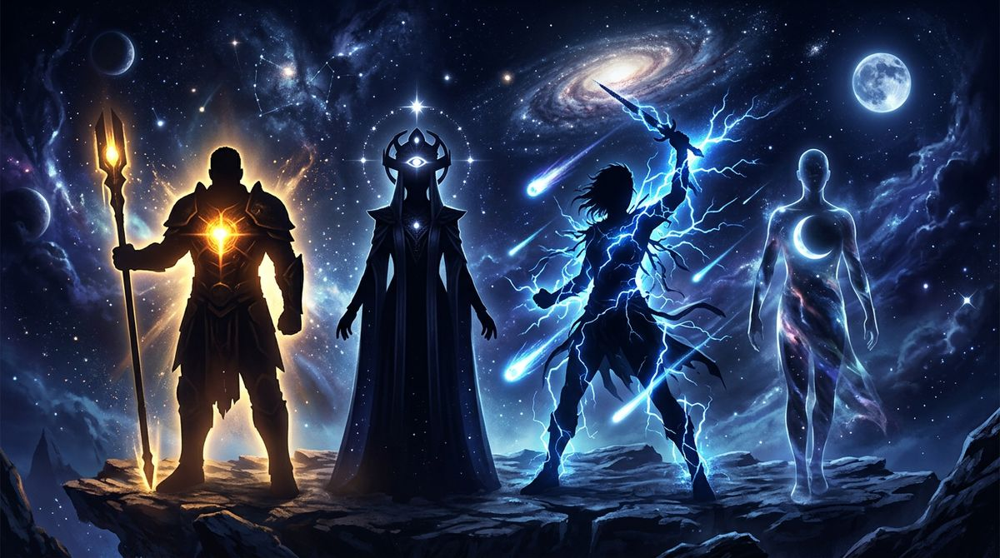

I 4 Tipi Human Design: scopri il tuo (in 30 secondi)
I 4 tipi energetici dello Human Design (Generatore, Proiettore, Manifestatore, Riflettore) determinano come funzioni davvero. Riconosci segnali e strategia, poi calcola la tua carta.

C'è una domanda che torna sempre, quando qualcuno scopre lo Human Design per la prima volta: «Ma io che tipo sono?»
I tipi sono quattro. Solo quattro. E rappresentano la differenza più importante del sistema, perché determinano come funzioni davvero — non come pensi di dover funzionare, non come ti hanno insegnato.
In questo articolo trovi i segnali per riconoscere ciascun tipo, la strategia decisionale che gli appartiene, e — soprattutto — il modo per confermare il tuo con certezza. Perché i segnali aiutano a sospettare, ma il tipo si stabilisce dalla configurazione della tua carta, non da un quiz.
I 4 tipi in 30 secondi
| Tipo | Quanti sono | Sorgente energetica | Strategia decisionale |
|---|---|---|---|
| Generatore | ~70% | Centro Sacrale definito | Rispondere |
| Proiettore | ~20% | Nessuna definizione del Sacrale | Aspettare l'Invito |
| Manifestatore | ~8% | Gola collegata a un centro motore (non al Sacrale) | Informare |
| Riflettore | ~1% | Nessun centro definito | Aspettare un ciclo lunare |
Adesso scendiamo nel dettaglio di ciascuno.
Generatore (e Generatore Manifestante)
Il Generatore è il tipo costruito per fare, costruire, mantenere. È la spina dorsale del mondo che funziona — ed è il tipo più diffuso in assoluto.
Come riconoscerlo:
- Hai energia che si rigenera quando fai cose che ti piacciono e si svuota quando ti forzi a fare cose che non ti corrispondono
- Senti una "scintilla" nel petto o nella pancia quando incontri qualcosa che è per te, e una specie di vuoto quando non lo è
- Quando segui l'impulso giusto, le cose si costruiscono in modo solido nel tempo
- Quando invece "inizi tu" qualcosa senza un trigger esterno, spesso fallisce o ti svuota — anche se sulla carta sembrava la mossa giusta
Strategia: Rispondere. Il Generatore non è progettato per partire da zero. È progettato per reagire — a una persona, a un'opportunità, a una richiesta, a una visione. Il segnale arriva dall'esterno (qualcosa accade, qualcuno chiede, qualcosa appare), e il corpo risponde con un sì o un no. Quando rispetta questa meccanica, costruisce relazioni durature, lavori che lo nutrono, decisioni che reggono nel tempo.
La variante Generatore Manifestante ha la stessa Strategia, ma con la Gola collegata al Sacrale: questo permette di agire più velocemente, saltando passaggi che il Generatore puro deve attraversare uno per uno. La sua sfida specifica è informare le persone coinvolte prima di cambiare direzione, perché altrimenti lascia dietro di sé persone disorientate.
Se ti riconosci in questi segnali, scopri come funziona davvero un Generatore →
Proiettore
Il Proiettore non ha l'energia per fare tutto in autonomia. Ha invece la capacità di leggere gli altri — di vedere chi sono, dove stanno andando, cosa li blocca. È un tipo costruito per guidare, consigliare, organizzare. Non per produrre in continuazione.
Come riconoscerlo:
- Vedi cose negli altri prima che le vedano loro
- Hai bisogno di molto più riposo di quanto la cultura attorno consideri "normale"
- Quando ti spingono a essere "produttivo come tutti", crolli rapidamente — anche se all'inizio reggi
- Hai esperienza di esaurimenti emotivi o fisici legati al lavoro
- Le tue migliori opportunità sono sempre arrivate quando qualcuno ti ha chiamato, non quando hai inseguito
Strategia: Aspettare l'Invito. Il Proiettore funziona per riconoscimento. Quando viene visto e invitato — in un ruolo, in una relazione, in un progetto — ha accesso a un'energia che non ha quando si propone da solo. L'invito non è solo una cortesia: è il segnale che chi lo invita è pronto a riceverlo. Senza invito, il Proiettore può ancora agire, ma fatica il doppio, si scontra con l'amarezza ("perché nessuno mi vede?"), e spesso brucia l'energia che gli serviva.
Se ti riconosci nei Proiettori, scopri perché lavorano meglio su invito →
Manifestatore
Il Manifestatore è il tipo costruito per iniziare. Ha la capacità di mettere in moto cose che altri tipi non riuscirebbero a far partire. È raro — solo l'8% della popolazione — ma il suo impatto è sproporzionato rispetto alla sua frequenza.
Come riconoscerlo:
- Quando hai un'idea o un impulso forte, non riesci ad aspettare che qualcuno te ne dia il permesso
- Le persone attorno a te a volte si sentono "spinte" o "sopraffatte" dalle tue iniziative
- Hai bisogno di molta autonomia per funzionare, e quando ti viene tolta diventi rabbioso
- I tuoi cicli sono di azione intensa alternata a pause altrettanto profonde
- Ti è capitato di iniziare qualcosa e di scoprire che gli altri non erano d'accordo — non perché fosse sbagliato, ma perché non avevi avvertito
Strategia: Informare. Il Manifestatore non aspetta inviti. Inizia. Ma deve informare le persone che verranno coinvolte prima di partire — non per chiedere permesso, ma per ridurre la resistenza. Quando informa, la rabbia si scarica e l'impatto delle sue azioni si amplifica. Quando non informa, scatena resistenze che lo rallentano o lo bloccano.
Riflettore
Il Riflettore è il tipo più raro: meno dell'1% della popolazione. È un campionatore d'ambiente. Non ha centri definiti in modo permanente: vive amplificando ciò che ha attorno, registrando la salute o la disfunzione di un luogo, di un gruppo, di un'epoca.
Come riconoscerlo:
- Ti senti molto diverso a seconda di chi hai vicino
- Stare in ambienti tossici ti distrugge in modi che chi sta con te non capisce
- Hai una sensibilità marcata al cambiamento dell'umore degli altri
- Hai bisogno di tempo lungo per prendere decisioni importanti
- A volte hai la sensazione di "non sapere chi sei" — perché in te risuonano tante presenze diverse
Strategia: Aspettare un ciclo lunare (circa 28 giorni) prima di prendere decisioni importanti. Il Riflettore non ha un'autorità interna fissa: la sua "saggezza" arriva osservando come la Luna attraversa il proprio bodygraph e producendo una visione che, su un mese intero, integra tutte le sfaccettature di una scelta. È un tempo lungo per gli standard contemporanei. Ed è non negoziabile.
Come capire qual è il TUO tipo
I segnali comportamentali aiutano a sospettare un tipo. Non a confermarlo.
Il motivo è semplice: ogni persona vive in mezzo ad altre persone, e ogni persona ha imitato per anni — inconsciamente — strategie che non sono le sue. Un Proiettore cresciuto in una famiglia di Generatori passa la vita a forzarsi di "produrre come loro", e quando guarda la propria esperienza vede tracce sia di Proiettore sia di Generatore. Un Manifestatore che ha imparato presto a non "scocciare gli altri" può sembrare un Proiettore che aspetta l'invito.
L'unico modo per stabilire il tipo con certezza è calcolare la carta. Il tipo si legge dalla configurazione del centro Sacrale e della Gola, due elementi che dipendono dalle posizioni planetarie alla nascita — non da come ti comporti oggi.
Servono tre dati: data di nascita, ora esatta, luogo di nascita. L'ora è il dato più critico (anche pochi minuti possono cambiare il tipo). Cercala sul certificato di nascita integrale, non sulla memoria familiare.
→ Calcolo Human Design gratis: la tua carta in 30 secondi
Cosa fare dopo aver scoperto il tuo tipo
Il tipo è il punto di partenza. La pratica è seguire la Strategia (Rispondere, Aspettare l'Invito, Informare, Aspettare il Ciclo Lunare) e usare l'Autorità Decisionale, che è il modo specifico in cui il tuo corpo ti dice sì o no.
Tipo + Strategia + Autorità sono la base operativa quotidiana. Tutto il resto — Profilo, Centri Aperti, Porte, Canali, Cross di Incarnazione — aggiunge profondità, ma queste tre cose insieme cambiano già il modo in cui prendi decisioni.
Se vuoi una lettura completa della tua configurazione — non solo il tipo, ma come funziona nella tua vita specifica — il Libretto d'Istruzioni Human Design è scritto sulla tua carta personale.
Domande Frequenti
Quanti tipi esistono nello Human Design?
I tipi energetici sono quattro: Generatore (con la variante Generatore Manifestante), Proiettore, Manifestatore e Riflettore. Ogni tipo ha una sorgente di energia diversa, una strategia decisionale specifica e un modo unico di interagire con l'ambiente. La distribuzione approssimativa è: circa il 70% Generatori, 20% Proiettori, 8% Manifestatori, 1% Riflettori.
Come faccio a sapere qual è il mio tipo Human Design?
Il tipo dipende dalla configurazione dei nove centri energetici nella tua carta, che a sua volta dipende dalle posizioni planetarie al momento della nascita. I segnali comportamentali aiutano a sospettare un tipo, ma per conferma servono data, ora esatta e luogo di nascita. Il calcolo è gratuito e immediato — bastano 30 secondi.
Posso essere più di un tipo?
No. Il tipo è uno solo e non cambia nel corso della vita. Quello che può sembrare un mix è in realtà l'effetto del condizionamento: ogni persona vive in ambienti e con persone di tipi diversi, e inconsciamente imita strategie che non sono sue. Tornare alla propria Strategia e Autorità è il primo passo per smettere di vivere il tipo di qualcun altro.
Qual è il tipo Human Design più comune?
Il Generatore (incluso il Generatore Manifestante) è di gran lunga il più diffuso: circa il 70% della popolazione. È il tipo costruito per fare, costruire, mantenere. La sua energia sacrale è la forza che muove il mondo. I Proiettori sono il 20%, i Manifestatori l'8%, i Riflettori meno dell'1%.
Che differenza c'è tra Generatore e Generatore Manifestante?
Entrambi hanno il centro Sacrale definito (la sorgente di energia che risponde) e seguono la stessa Strategia della Risposta. Il Generatore Manifestante ha anche la Gola collegata al Sacrale: questo gli permette di agire più velocemente e di saltare passaggi. La conseguenza pratica è che il Generatore Manifestante deve informare le persone coinvolte prima di cambiare direzione, per evitare di lasciare confusione dietro di sé.
Cosa devo fare dopo aver scoperto il mio tipo?
Il tipo da solo non basta. Conta come usi la tua Strategia (Rispondere, Aspettare l'Invito, Informare, Aspettare il Ciclo Lunare) e la tua Autorità Decisionale, che è il modo specifico in cui il tuo corpo ti dice 'sì' o 'no'. Un'analisi completa della carta — bodygraph con Centri, Porte, Profilo e Cross di Incarnazione — chiarisce come tutto si compone nella tua configurazione specifica.
Vuoi scoprire la tua meccanica?
Se non conosci ancora il tuo Tipo, calcola gratis la tua carta in pochi secondi. Se lo sai già, prenota una Panoramica BG5® e scopri come funziona nel tuo caso specifico.